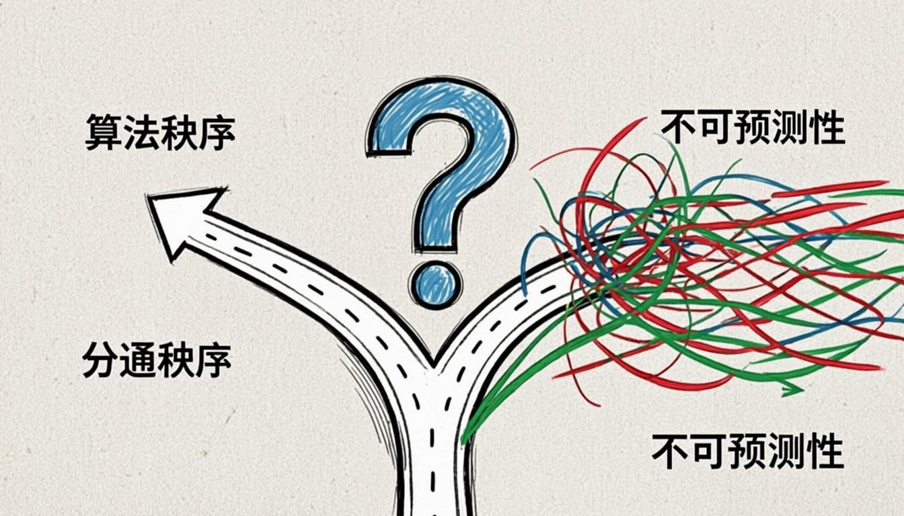

الطور الأول: بناء الإشكالية
قبل أن نُقدّم الإجابات، لنَعِش السؤال عبر مجالك المُحبب: البرمجة
١.١ السياق البصري للإشكالية

الإنسان بين الخوارزمية والاختيار — عُقدة من الكود والأسئلة.
١.٢ الإشكالية في عالمك
كان سليم مبرمجًا شابًا يكتب خوارزميات التوصية لمستخدمي تطبيق موسيقي. كل يوم، كان يُحسّن الدالة التي تتوقّع ذوق المستخدم التالي. كل نقرة "أعجبني" كانت تُغذّي الخوارزمية، فتُحدّد لاحقًا ما سيستمع إليه ملايين المستخدمين.
ذات مساء، أدرك سليم أن مستخدمًا واحدًا — اسمه كريم — لم يَعُد يستمع إلا لفنان واحد. حين حاول كريم البحث عن شيء مختلف، أعادت الخوارزمية توجيهه إلى نفس الفنان. كانت الفقاعة تُغلق ببطء.
حينها تردد سليم بين خيارين: أن يُعدّل الخوارزمية لِتُظهر تنوّعًا عشوائيًا (فيُخرج كريمًا من فقاعته ولو رغمًا عنه)، أو أن يتركها كما هي (فيحترم "اختيار" كريم، وإن كان مُهندَسًا). في تلك اللحظة، سأل سليم نفسه: هل حرية كريم حقيقية إن كانت خياراته مُهندَسة مسبقًا؟
١.٣ جرّب بنفسك
اِختر موقفًا، وشاهد التبعات. لا توجد إجابة "صحيحة" — الهدف أن تُفكّر.
مفترق الخوارزمية
اِختر موقفًا:
الخوارزمية «الأمينة»
تُظهر للمستخدم ما يحب (تردّدًا لتفضيلاته السابقة). تحترم «اختياره»، لكن تُغلقه في فقاعة لا يخرج منها.
الخوارزمية «المُ扰َشة»
تُظهر تنوّعًا عشوائيًا (تُدخل 20% محتوى خارج فقاعتهم). تُخرجهم من الفقاعة، لكن رغمًا عنهم أحيانًا.
الطور الثاني: آراء الفلاسفة
الإنسان يميل بطبعه إلى الإجابة. جرب أن تطرح أي سؤال على أي واحد من معارفك، في الغالب لن يقول لك "لا أعلم"، بل سيبادر لتقديم إجابة ويصرّ على أنها الإجابة الأصح، هذا ولو كان السؤال خارج مجال تخصصه. لهذا، لا بد أن تحمل معك عدة الحجاج الفلسفي أينما ذهبت، لكي لا تُخدع بأقوال الناس ولا تندفع إلى الاعتقاد بما هو باطل.
مفتاح القراءة
الفيلسوف الأول: أفلاطون
المرجع: كتاب «الجمهورية»، الكتاب السابع (أسطورة الكهف) · (Plato)
الناس كأسرى في كهف، مُقيّدون منذ الطفولة، لا يرون إلا ظلالًا تتحرك على الجدار أمامهم. هذه الظلال هي عالمهم، وهي ما يعتبرونه "حقيقة". الذي يرى الظلال لا يعرف أنها ظلال، فلا يبحث عن أصلها خلفه. والدليل على ذلك أن الأسير المُحرَّر، حين يخرج من الكهف، يُذهله النور، ولا يصدّق أن ما رآه في الكهف كان مجرّد ظلال. وبما أن ما نراه في حياتنا العادية يشبه الظلال في حدّه وتغيّره، فإن معرفتنا العادية مُقيَّدة، وحريتنا الحقيقية لا تتحقق إلا بالخروج من الكهف نحو المعرفة.
التحليل الحجاجي
- الدعوى: حريتنا الحقيقية لا تتحقق إلا بالخروج من الكهف (الجهل) نحو المعرفة
- المقدمات: معرفتنا العادية مُقيَّدة كظلال الكهف؛ الأسير لا يعرف أنه أسير
- البينة: تجربة الأسير المُحرَّر: يُذهله النور، يكتشف أن ما رآه كان ظلالًا
- المجيز: ما يتغيّر ويحدّ كالظلال لا يمكن أن يكون حقيقة كاملة، فالمعرفة الكاملة هي شرط الحرية الكاملة
لكننا نرى أن أفلاطون ركّز على الجهل كسبب القيد، وأغفل أن الإنسان قد يكون عالِمًا ومُقيَّدًا في آن — فالعالِم قد تُحدّد خياراته بنى خارجية. وبهذا نمرّ إلى فيلسوفنا الثاني سبينوزا، والذي كتب هو الآخر في كتابه «الأخلاق» حيث يقول:
الفيلسوف الثاني: سبينوزا
المرجع: كتاب «الأخلاق» (Ethica)، الجزء الخامس · (Baruch Spinoza)
الإنسان الحر هو الذي يفهم ضرورة الأشياء، لا الذي يهرب منها. نظن أننا أحرار حين نفعل ما نريد، لكننا لا نعرف أسباب رغباتنا. فالطفل يظن أنه حر في طلب الحليب، والغاضب يظن أنه حر في انتقامه، وكلاهما مدفوع بأسباب لا يعرفها. وبما أن فهم الأسباب هو ما يُحرّر من الانفعال الأعمى، فإن الحرية ليست فعل الاختيار، بل هي فهم الضرورة — فما فُهم لم يَعُد يسودنا.
التحليل الحجاجي
- الدعوى: الحرية هي فهم الضرورة، لا فعل الاختيار
- المقدمات: نظن أننا أحرار حين نفعل ما نريد، لكننا لا نعرف أسباب رغباتنا
- البينة: الطفل والغاضب يظنان أنهما حرّان، وكلاهما مدفوع بأسباب لا يعرفها
- المجيز: فهم الأسباب يُحرّر من الانفعال الأعمى، فما فُهم لم يَعُد يسودنا
لكن سبينوزا أغفل أن فهم الضرورة لا يكفي إن كانت الضرورة خارجية مفروضة — فالمبرمج قد يفهم الخوارزمية تمامًا، ويظل مُلزَمًا بكتابتها. وبهذا نمرّ إلى فيلسوفنا الثالث كانط، والذي كتب هو الآخر في كتابه «نقد العقل العملي» حيث يقول:
الفيلسوف الثالث: كانط
المرجع: كتاب «نقد العقل العملي» (Kritik der praktischen Vernunft) · (Immanuel Kant)
الحرية هي شرط الإمكان للأخلاق، لا ظاهرة نُشاهدها. لو لم نكن أحرارًا، لما كان للواجب معنى، ولا للمسؤولية وجه. فنحن حين نُحاسب المذنب على فعله، نفترض ضمنيًا أنه كان يستطيع أن يفعل غيره، وإلا لما استحق العقاب. وبما أن الأخلاق قائمة فعلاً في حياتنا (نُحاسب ونُمدح ونذم)، فإن الحرية حقيقة عملية ثابتة، وإن لم نستطع إثباتها نظريًا — فنحن أحرار لأن علينا أن نكون كذلك.
التحليل الحجاجي
- الدعوى: نحن أحرار لأن علينا أن نكون كذلك (الحرية حقيقة عملية ثابتة)
- المقدمات: لو لم نكن أحرارًا، لما كان للواجب معنى ولا للمسؤولية وجه
- البينة: نُحاسب المذنب لأنه كان يستطيع أن يفعل غيره، وإلا لما استحق العقاب
- المجيز: الأخلاق قائمة فعلاً في حياتنا (نُحاسب ونُمدح ونذم)، وما قام فعلاً يفترض شرطه
ثلاثة مواقف: حرية كمعرفة (أفلاطون)، حرية كفهم (سبينوزا)، حرية كمسلّمة أخلاقية (كانط). فأيها يُجيب عن سؤال سليم المبرمج؟
الطور الثالث: الخلاصة
اِنسخ المواقف الثلاثة في جدول واحد، ثم اِتخذ موقفك أنت.
الجدول المقارن
| البُعد | أفلاطون | سبينوزا | كانط |
|---|---|---|---|
| الموقف الجوهري | الحرية = خروج من الجهل إلى المعرفة | الحرية = فهم الضرورة | الحرية = مسلّمة عملية ضرورية للأخلاق |
| الدعوى المركزية | الحرية تتحقق بالمعرفة، لا بالاختيار العادي | حرّية فهم الأسباب لا حرّية فعل ما نشاء | أحرار لأن علينا أن نكون كذلك |
| أقوى دليل | أسطورة الكهف — تجربة الخروج من الظلال | تمييزه بين الرغبة الواعية والرغبة العمياء | الحساب الأخلاقي يفترض حرية الفاعل |
| أضعف نقطة | يفترض ثنائية حادّة بين ظلال وحقيقة، لكن الحقيقة قد تكون متدرّجة لا مطلقة | يفترض أن الفهم وحده كافٍ للتحرر، لكن قد نفهم ولا نزال مُقيَّدين | حجّة «دلالية-عملية» لا تُثبت الحرية كحقيقة ميتافيزيقية، بل كضرورة منطقية للأخلاق |
| نقاط الالتقاء | الثلاثة يتفقون أن الحرية ليست مجرد «فعل ما نشاء» — هناك بُعد أعمق: المعرفة (أفلاطون)، الفهم (سبينوزا)، أو الالتزام الأخلاقي (كانط). | ||
مواقف أنت
الآن بعد أن رأيت 3 مواقف، ما موقف أنت من الإشكالية؟ اِملأ الحجة بأركانها الأربعة.
سؤال يبقى مفتوحًا
في عالم تُحدّد فيه الخوارزميات خياراتنا قبل أن نختار، أيّ هذه الحرّيات تحتاجها أنت؟ حرية أن تعرف؟ حرية أن تفهم؟ أم حرية أن تُطالَب بالمسؤولية؟